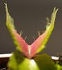
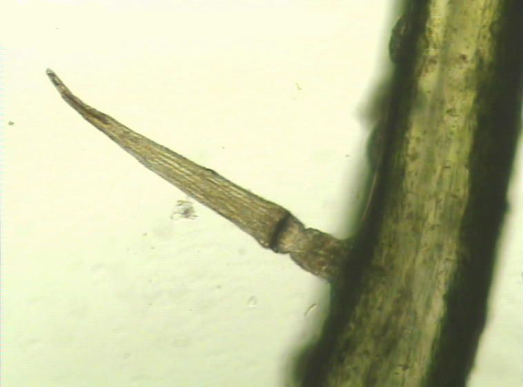
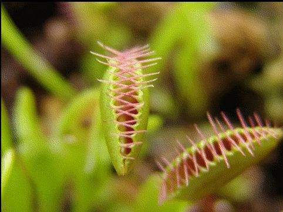
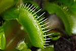

A Vénusz légycsapója (Dionaea muscipula) a szegfûvirágúak (Caryophyllales) rendjébe és a harmatfûfélék (Droseraceae) családjába tartozó rovaremésztõ faj.
A Vénusz légycsapója magasra felnyúló száron hozza virágait, nehogy a beporzó rovarok véletlenül a csapdájába essenek. A virágzás igen sok energiát emészt föl a növény részérõl. Egyes növénytartók szerint a virágokat megjelenésükkor le kell csípni, mert enélkül a növény pusztulását kockáztatjuk. Más vélemények szerint erre nincs szükség, a virágzás csak átmenetileg lassítja le a növény fejlõdését, esetleg csak a fiatal töveknél lehet célszerû a virág eltávolítása, hogy több energiája maradjon a növénynek a növekedésre. Nagyon apró magokat hoz, melyeket vagy azonnal vessük el, vagy tegyük a hûtõbe. Magról általában 4-5 év alatt nõ meg, és akár 2-3 évtizedig is élhet. Szaporítani inkább a tõben megjelenõ oldalhajtásokról érdemes. Egy növény sohasem hoz hét levélnél többet, ha mégis ez látszódik, akkor ez annak a jele, hogy új kis növényke vált le az anyanövényrõl. A növényrõl levágott, majd talajba szúrt levél is meggyökeresedhet.
A növény leveleinek végén helyezkednek el az édes illatot árasztó csapdák. Belsejükben mindkét oldalon 3-3 érzékelõszõr található. Amikor a zsákmány a csapdára száll és az érzékelõket megérinti, a levéllemezek fél másodperc alatt összezáródnak és foglyul ejtik az áldozatot. A kisebb rovaroknak még van esélyük kimenekülni a „fogak” közül, hiszen a növény csapdája elõször nem zárul be teljesen, így védekezik a túl kicsi zsákmány ellen, melynek megemésztése több energiába kerülne, mint amennyit a növény belõle nyerhet. Ha az áldozat megfelelõ nagyságú és ismételten az érzékelõkhöz ér, a csapda légmentesen bezárul és emésztõnedvekkel telik meg, amíg a zsákmány fel nem oldódik. Az emésztés után, ami egy-két hét alatt zajlik le, a csapda újra kinyílik.
|  |  |  |  |
|---|---|---|---|
| Ebbõl a szögbõl jól láthatók az érzékelõk | Egy érzékelõszõr mikroszkóp felvétele | A csapda záródása | Egy ideig nyitva áll a menekülõút a kisebb rovaroknak |
Nemzetségének egyetlen faja. A természetben megtalálható 'typica' forma mellett az utóbbi években már a növénynemesítõk számtalan változatát állították elõ. A sok új változat megjelenése a néhány évtizede megjelent, in-vitro szaporításnak köszönhetõ, amely során kis növényi részekbõl megfelelõ tápoldatban új kis növények fejlõdnek ki. Az ilyen módon történõ tömeges szaporítás melléktermékei tulajdonképpen a különféle változatok, amelyek az eredeti forma mutáció okozta elváltozásait hordozzák külsõ megjelenésükben. Ezen típusok színükben, formájukban, a levélrozetta alakjában, a csapók színezõdésében és végül a szélsõ tüskék, fogak alakjában különböznek.
A légycsapó kedveli a sok napsütést, ennek hatására csapói szép pirossá válnak, de félárnyékban is szépen fejlõdik. Mivel mocsaras területen él, nyáron célszerû cserepestül 1-1,5 centiméter vízbe állítani. A csapvíz nem felel meg az öntözéshez, mert számos oldott ásványi anyagot tartalmaz. Csak a lágy víz (esõvíz, desztillált víz) alkalmas öntözésére. A növény kedveli a magasabb páratartalmat, de ha cserepe alatt folyamatosan áll a víz, az is tökéletesen elegendõ. Szobában is nevelhetõ például egy ablakpárkányon, de magas páratartalmú környezetet biztosító terráriumba, vagy floráriumba is helyezhetõ. Ilyenkor gondoskodni kell róla, hogy sok, mesterséges fényt kapjon. Télen a növény nyugalmi idõszaka következik, ilyenkor fejlõdése lelassul, levelei kissé visszapusztulnak. Ebben az idõszakban a 3-15 °C körüli hõmérsékletet, és az állandóan, de épphogy nyirkos talajt igényli. Alkalmanként elviseli a -10 °C-ot is, de eredeti élõhelyén (Észak-Amerika keleti partvidéke, Észak- és Dél-Karolina, Wilmington város mintegy 80-100 mérföldes körzete) a téli idõszakban sem esik tartósan a hõmérséklet fagypont alá. A légycsapó a legjobban tõzegben, esetleg szárított tõzegmohában nevelhetõ, amelybe kertészeti perlit vagy mészmentes homok is keverhetõ. Nem szabad tápoldatozni, hiszen eredeti élõhelyén a tápanyagszegény talaj miatt fejlõdött így a növény, a tápoldat használata szinte biztosan kiöli.
Fennmaradása céljából „etetni” a növényt nem szükséges, mert valószínûleg megfogja magának azt a kis mennyiségû rovart, amire szüksége van. Esetleg a növekedési idõszakokban lehet segíteni fejlõdését havi 1-2 zsákmány adásával: csak megfelelõ méretû és fajtájú rovarral vagy puhatestûvel etethetõ, mivel a túl erõs préda kirághatja magát a csapda falán, károsítva a növényt. Egyes növénytartók szerint az „éheztetés” külön széppé teszi a Dionaea-t, ilyenkor a csapók belseje jobban bepirosodik. Az emészthetetlen kitinpáncélt és egyéb részeket a természetben a szél és az esõ távolítja el a csapdákból, ami szobai körülmények között nem következik be, ezért csipesszel érdemes lehet kiszedni a maradványokat, mivel ha sokáig ott maradnak a növényhez tapadva, könnyen megjelenhetnek a baktériumok és a penészgombák, ami viszont a csapó elrohadását eredményezheti. Mivel a táplálékmaradék eltávolítása csipesszel igen nehézkes a csapó véletlen összecsukása nélkül, ezért inkább érdemes megfelelõ zsákmányt adni a növénynek. Az emberi fogyasztásra való hús vagy felvágott nem alkalmas a növény táplálására, mert a bennük lévõ só, savak és adalékanyagok végérvényesen elrohasztják a növényt. A csapdák néhány összezáródás után elöregednek és elhalnak; ez természetes jelenség, mint ahogy az is, hogy helyettük új csapókat növeszt a növény. A csapdák számára eleve megerõltetõ a mozgás és az emésztõnedv termelése, ezért fölösleges terhelni a légycsapót túlzásba vitt etetéssel, vagy a csapók piszkálásával.
Mivel a Vénusz légycsapója természetes élõhelyén gyakran hetekig víz alá kerül, túlöntözni szinte lehetetlen. Hosszabb távollét esetén, vagy az esetleges kártevõk eltávolítása céljából hasznos lehet a teljes elárasztás.